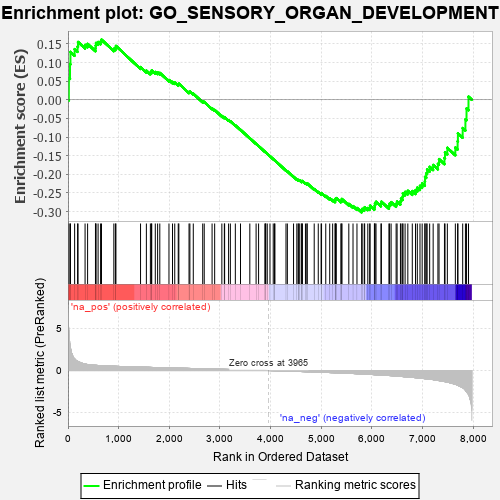
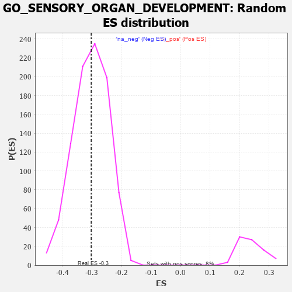

| | | Dataset | 7d |
| Phenotype | NoPhenotypeAvailable |
| Upregulated in class | na_neg |
| GeneSet | GO_SENSORY_ORGAN_DEVELOPMENT |
| Enrichment Score (ES) | -0.30235416 |
| Normalized Enrichment Score (NES) | -0.9970939 |
| Nominal p-value | 0.49182117 |
| FDR q-value | 0.87580645 |
| FWER p-Value | 1.0 |
Table: GSEA Results Summary

Fig 1: Enrichment plot: GO_SENSORY_ORGAN_DEVELOPMENT
Profile of the Running ES Score & Positions of GeneSet Members on the Rank Ordered List
| PROBE | GENE SYMBOL | GENE_TITLE | RANK IN GENE LIST | RANK METRIC SCORE | RUNNING ES | CORE ENRICHMENT | | 1 | HMX3 | | | 17 | 4.775 | 0.0585 | No |
| 2 | SIX2 | | | 40 | 3.152 | 0.0958 | No |
| 3 | TGFB3 | | | 49 | 2.654 | 0.1285 | No |
| 4 | SP3 | | | 131 | 1.391 | 0.1359 | No |
| 5 | RORB | | | 189 | 1.097 | 0.1426 | No |
| 6 | WNT16 | | | 198 | 1.072 | 0.1552 | No |
| 7 | DLL1 | | | 337 | 0.760 | 0.1472 | No |
| 8 | BAX | | | 387 | 0.711 | 0.1500 | No |
| 9 | SRF | | | 542 | 0.615 | 0.1382 | No |
| 10 | MCM2 | | | 546 | 0.614 | 0.1456 | No |
| 11 | JMJD6 | | | 553 | 0.613 | 0.1526 | No |
| 12 | PITX3 | | | 594 | 0.596 | 0.1551 | No |
| 13 | SMG9 | | | 643 | 0.579 | 0.1563 | No |
| 14 | HES5 | | | 661 | 0.571 | 0.1614 | No |
| 15 | STOX1 | | | 905 | 0.506 | 0.1369 | No |
| 16 | TDRD7 | | | 936 | 0.498 | 0.1394 | No |
| 17 | LRIG1 | | | 946 | 0.497 | 0.1445 | No |
| 18 | PDS5B | | | 1432 | 0.403 | 0.0878 | No |
| 19 | SOS1 | | | 1547 | 0.384 | 0.0781 | No |
| 20 | CDK4 | | | 1626 | 0.370 | 0.0729 | No |
| 21 | RXRA | | | 1647 | 0.365 | 0.0750 | No |
| 22 | ESRP1 | | | 1653 | 0.364 | 0.0790 | No |
| 23 | MEIS1 | | | 1723 | 0.351 | 0.0746 | No |
| 24 | LRP5 | | | 1769 | 0.342 | 0.0732 | No |
| 25 | ABR | | | 1812 | 0.335 | 0.0721 | No |
| 26 | ROR1 | | | 1993 | 0.306 | 0.0531 | No |
| 27 | MEIS2 | | | 2063 | 0.296 | 0.0480 | No |
| 28 | BMP7 | | | 2107 | 0.290 | 0.0462 | No |
| 29 | DDR1 | | | 2176 | 0.280 | 0.0411 | No |
| 30 | MEIS3 | | | 2188 | 0.278 | 0.0432 | No |
| 31 | HIPK2 | | | 2389 | 0.247 | 0.0209 | No |
| 32 | PBX4 | | | 2406 | 0.245 | 0.0220 | No |
| 33 | VSX1 | | | 2473 | 0.231 | 0.0165 | No |
| 34 | MITF | | | 2659 | 0.205 | -0.0045 | No |
| 35 | DSCAM | | | 2689 | 0.200 | -0.0057 | No |
| 36 | NR2E1 | | | 2844 | 0.177 | -0.0231 | No |
| 37 | FGFR2 | | | 2895 | 0.167 | -0.0273 | No |
| 38 | LEF1 | | | 3037 | 0.144 | -0.0435 | No |
| 39 | HDAC1 | | | 3086 | 0.138 | -0.0478 | No |
| 40 | LHX3 | | | 3092 | 0.138 | -0.0467 | No |
| 41 | PAX6 | | | 3170 | 0.127 | -0.0549 | No |
| 42 | FZR1 | | | 3205 | 0.122 | -0.0577 | No |
| 43 | SMAD3 | | | 3303 | 0.105 | -0.0688 | No |
| 44 | MED1 | | | 3405 | 0.089 | -0.0805 | No |
| 45 | MAPK3 | | | 3589 | 0.062 | -0.1031 | No |
| 46 | NF1 | | | 3713 | 0.040 | -0.1182 | No |
| 47 | SKI | | | 3762 | 0.032 | -0.1240 | No |
| 48 | RAB18 | | | 3886 | 0.013 | -0.1395 | No |
| 49 | NIPBL | | | 3900 | 0.010 | -0.1410 | No |
| 50 | JAG2 | | | 3903 | 0.010 | -0.1411 | No |
| 51 | CCM2 | | | 3933 | 0.005 | -0.1448 | No |
| 52 | EYA1 | | | 3987 | -0.006 | -0.1515 | No |
| 53 | ATG5 | | | 4051 | -0.016 | -0.1593 | No |
| 54 | TCF15 | | | 4077 | -0.020 | -0.1622 | No |
| 55 | WNT2 | | | 4084 | -0.021 | -0.1627 | No |
| 56 | TBX2 | | | 4303 | -0.060 | -0.1898 | No |
| 57 | OPA1 | | | 4330 | -0.065 | -0.1923 | No |
| 58 | KCNQ4 | | | 4452 | -0.085 | -0.2066 | No |
| 59 | WNT5B | | | 4517 | -0.098 | -0.2135 | No |
| 60 | NTRK2 | | | 4543 | -0.104 | -0.2154 | No |
| 61 | ABI2 | | | 4554 | -0.106 | -0.2153 | No |
| 62 | MPV17 | | | 4575 | -0.112 | -0.2165 | No |
| 63 | GATA3 | | | 4614 | -0.120 | -0.2198 | No |
| 64 | ATOH1 | | | 4615 | -0.121 | -0.2182 | No |
| 65 | SDK1 | | | 4627 | -0.124 | -0.2181 | No |
| 66 | PTK7 | | | 4687 | -0.136 | -0.2239 | No |
| 67 | LHX2 | | | 4716 | -0.143 | -0.2256 | No |
| 68 | DCX | | | 4721 | -0.143 | -0.2243 | No |
| 69 | DLG1 | | | 4860 | -0.169 | -0.2398 | No |
| 70 | FZD4 | | | 4940 | -0.186 | -0.2475 | No |
| 71 | PROM1 | | | 4996 | -0.197 | -0.2520 | No |
| 72 | KLF4 | | | 5005 | -0.198 | -0.2505 | No |
| 73 | DRD2 | | | 5088 | -0.221 | -0.2581 | No |
| 74 | TBX1 | | | 5166 | -0.241 | -0.2649 | No |
| 75 | CLCN2 | | | 5224 | -0.250 | -0.2690 | No |
| 76 | EPHA4 | | | 5273 | -0.265 | -0.2717 | No |
| 77 | CELF4 | | | 5275 | -0.266 | -0.2685 | No |
| 78 | FAT1 | | | 5281 | -0.267 | -0.2657 | No |
| 79 | FKBP8 | | | 5296 | -0.270 | -0.2641 | No |
| 80 | FZD5 | | | 5386 | -0.292 | -0.2717 | No |
| 81 | SOX8 | | | 5404 | -0.296 | -0.2701 | No |
| 82 | ATOH7 | | | 5405 | -0.296 | -0.2664 | No |
| 83 | FGFR1 | | | 5543 | -0.332 | -0.2796 | No |
| 84 | ROR2 | | | 5626 | -0.353 | -0.2856 | No |
| 85 | SIX6 | | | 5704 | -0.377 | -0.2906 | No |
| 86 | RDH13 | | | 5797 | -0.405 | -0.2972 | Yes |
| 87 | BBS4 | | | 5806 | -0.407 | -0.2930 | Yes |
| 88 | ARL6 | | | 5847 | -0.417 | -0.2928 | Yes |
| 89 | RING1 | | | 5856 | -0.420 | -0.2885 | Yes |
| 90 | KCNQ1 | | | 5918 | -0.441 | -0.2907 | Yes |
| 91 | PRDM1 | | | 5956 | -0.457 | -0.2896 | Yes |
| 92 | B9D1 | | | 5962 | -0.459 | -0.2844 | Yes |
| 93 | NR2E3 | | | 6048 | -0.488 | -0.2891 | Yes |
| 94 | LRIG3 | | | 6055 | -0.492 | -0.2836 | Yes |
| 95 | JAG1 | | | 6060 | -0.494 | -0.2778 | Yes |
| 96 | FBN1 | | | 6080 | -0.499 | -0.2739 | Yes |
| 97 | THRB | | | 6178 | -0.531 | -0.2795 | Yes |
| 98 | FJX1 | | | 6186 | -0.533 | -0.2736 | Yes |
| 99 | IFT88 | | | 6335 | -0.590 | -0.2850 | Yes |
| 100 | IFT27 | | | 6348 | -0.596 | -0.2790 | Yes |
| 101 | CDON | | | 6378 | -0.607 | -0.2749 | Yes |
| 102 | SOX2 | | | 6477 | -0.652 | -0.2792 | Yes |
| 103 | LAMA1 | | | 6496 | -0.659 | -0.2731 | Yes |
| 104 | OTOP1 | | | 6562 | -0.690 | -0.2726 | Yes |
| 105 | TTLL5 | | | 6574 | -0.696 | -0.2651 | Yes |
| 106 | MKS1 | | | 6607 | -0.715 | -0.2601 | Yes |
| 107 | TUB | | | 6611 | -0.718 | -0.2514 | Yes |
| 108 | USH1G | | | 6654 | -0.740 | -0.2474 | Yes |
| 109 | EGFR | | | 6708 | -0.765 | -0.2444 | Yes |
| 110 | WDR19 | | | 6796 | -0.812 | -0.2452 | Yes |
| 111 | AHI1 | | | 6860 | -0.848 | -0.2424 | Yes |
| 112 | HCN1 | | | 6895 | -0.865 | -0.2358 | Yes |
| 113 | FAT4 | | | 6948 | -0.901 | -0.2309 | Yes |
| 114 | NPHP4 | | | 6991 | -0.931 | -0.2245 | Yes |
| 115 | CTNS | | | 7044 | -0.965 | -0.2188 | Yes |
| 116 | MYH10 | | | 7048 | -0.966 | -0.2069 | Yes |
| 117 | OPN4 | | | 7072 | -0.978 | -0.1974 | Yes |
| 118 | BBS7 | | | 7089 | -0.988 | -0.1869 | Yes |
| 119 | WHRN | | | 7139 | -1.025 | -0.1801 | Yes |
| 120 | MFN2 | | | 7208 | -1.081 | -0.1751 | Yes |
| 121 | MYO7A | | | 7302 | -1.175 | -0.1720 | Yes |
| 122 | TRPM1 | | | 7324 | -1.197 | -0.1594 | Yes |
| 123 | LHX1 | | | 7431 | -1.305 | -0.1564 | Yes |
| 124 | CASP2 | | | 7442 | -1.322 | -0.1408 | Yes |
| 125 | XRN2 | | | 7488 | -1.384 | -0.1290 | Yes |
| 126 | PTF1A | | | 7646 | -1.637 | -0.1282 | Yes |
| 127 | MDM1 | | | 7691 | -1.742 | -0.1117 | Yes |
| 128 | MYO6 | | | 7697 | -1.753 | -0.0900 | Yes |
| 129 | NPHP1 | | | 7791 | -2.041 | -0.0759 | Yes |
| 130 | DLX5 | | | 7845 | -2.378 | -0.0525 | Yes |
| 131 | ECE1 | | | 7867 | -2.498 | -0.0234 | Yes |
| 132 | FBN2 | | | 7906 | -2.873 | 0.0083 | Yes |
Table: GSEA details [plain text format]

Fig 2: GO_SENSORY_ORGAN_DEVELOPMENT: Random ES distribution
Gene set null distribution of ES for GO_SENSORY_ORGAN_DEVELOPMENT